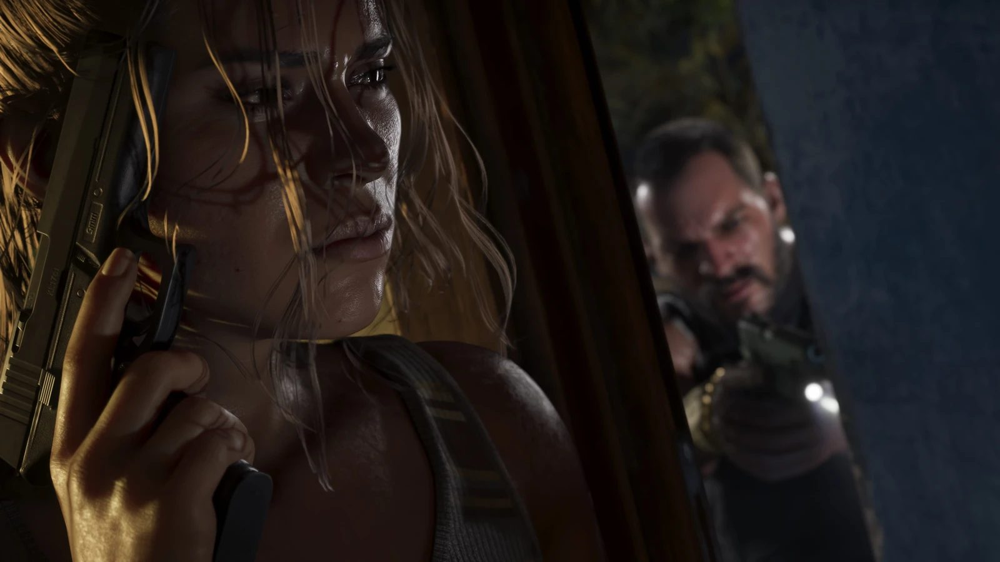

GTA 6 wanted level and heat, explained

How the wanted level works
Almost every crime in GTA 6 gets reported to the police — but only if someone sees it, hears it, or an alarm or tracker trips. If nobody reports it, nothing happens. Once the police are alerted, stars appear in the top right of the screen and the map shows the red search area — the heat zone — around the crime scene. The police search inside that area whether or not they know who you are, so your first job is always to get out of it. If you do, the wanted status (the stars) disappears — but the heat can linger, as explained below.
The number of stars depends on how serious the crime was, and the search gets bigger and harder with each one. Polygon's guide puts it like this:
- 1 star: a minor crime such as carjacking. Expect one police car and two officers — and at this level the police will try to arrest you before opening fire.
- 2 stars: robbing and hurting a few people. Several police cars respond.
- 3 stars: a couple of murders. The police call in air support — a helicopter with firepower. Forests, bridges and buildings are your friends at this point.
- 4–5 stars: a serious, sustained crime spree, with a much larger and more aggressive response.
- 6 stars: the maximum. You only get here with a prolonged crime spree — and at six stars the heat zone can lock down the whole map. (Reported by Polygon and Beebom)
Committing more crimes while wanted raises the level, so the fastest way to make a bad situation worse is to keep shooting. The reverse is also true: the wanted level only falls once you are out of sight and out of the zone.
What the star colours mean
The colour and transparency of the stars tell you what the police know — and that matters more than the number. Guides describe the same states with slightly different names, but the meanings agree across Polygon, ScreenRant and Destructoid:
- Transparent / outlined stars — suspect unknown. A crime has been reported and the police are on their way, but they have no description of who did it. If you leave the area before they arrive, they investigate the scene without targeting you. This is your best window to slip away clean.
- White stars — in active pursuit. The police can see you and know who you are. Heat icons appear under the stars as they notice your identifiers. If the white stars start flashing, the police are losing track of you — you are successfully escaping.
- Grey stars — visual lost. The police have lost direct sight of you but are still searching. This is the moment to change your clothes, vehicle and appearance before they find you again.
- Red stars — heat. You have escaped the immediate chase, but the area around your last known location is still hot on the map. The police know your description and are stationed in that zone. If you are spotted there, or commit another crime there, the chase starts again. Leave the area, or lie low and stay unseen.
- Transparent red stars — heat, suspect unknown. The area is still hot, but the police have no identifiers for you. They may not recognise your appearance — but they will be suspicious if they see you carrying a gun.
Rule of thumb from ScreenRant: when the stars are white, run until they turn fully red, then stay hidden until they are only outlined in red — or gone. You will also hear the police say over the scanner that they have lost you.
The heat icons: what the police know about you
Under the stars you will see small red circles with icons — the heat icons. Each one is something the police can recognise you by. As long as an icon is showing, being spotted again restarts the chase, even after you escaped. Here is every icon and how to clear it (Polygon):
- Appearance (head icon): the police know your face. Put on a cap and sunglasses, or get a haircut. Caps and sunglasses are cheap and worth carrying at all times. You can also wear a mask before committing a crime and remove it afterwards — but do not put one on after the crime, as that only makes you look suspicious.
- Outfit (clothes icon): the police know what you are wearing. Change clothes — keep a spare set in your car, or buy a new outfit in a shop.
- Vehicle (car icon): the police know your car. Visit a Pay 'N Spray to respray it (lose the cops first) or simply swap vehicles. If you are stealing a replacement, use the WAiNK app to check it has no alarm first.
- Visible weapon (weapon icon): the police know you are armed. A sidearm can be holstered, but longarms cannot be hidden on your body — drop them or stow them in your vehicle's trunk.
- Partner (double heads icon): the police know the crime was committed by two people. Talk to your partner and split up.
- CCTV (camera icon): the crime was recorded. Find the recorder at the scene and destroy the footage — in a shop it is usually behind the counter. If the icon also shows a cloud, the footage is stored online and cannot be destroyed; a mask and a spare set of clothes are your disguise instead.
When you successfully remove an identifier, its icon disappears from the screen. Clear them all and the police have nothing left to recognise you by.
How to lose the cops, step by step
1. Create distance, then hide. Use the fastest vehicle you have, then break line of sight — swap vehicles, go off-road, dive underwater, or enter a building. Polygon's example: drive into a forest and run away on foot.
2. Do not raise the level while escaping. Shooting cops or hitting civilians adds stars and widens the search. If you must fight, incapacitating shots to arms and legs — or spraying bullets without aiming to kill — raise the level less than killing does.
3. Clear the heat icons. As soon as the police lose sight of you, deal with the icons above. If you are spotted while they are still active, the chase restarts and the heat zone refreshes around where you were seen.
4. Leave the heat zone. There is no wanted level outside the red zone. With time, the wanted status disappears entirely — how long that takes depends on the number of stars. You can re-enter a heat zone before then if your icons are cleared, but avoid suspicious behaviour: carrying a gun near a crime scene is not a good idea.
5. If you are driving, drive smart. A fast, manoeuvrable car can outrun the chase in a straight line, but keep going straight for too long and the police set up barricades. Swerve down side streets and change direction to confuse them. (ScreenRant)
How to avoid heat altogether
The cleanest escape is never getting a wanted level at all — and in GTA 6 that is genuinely possible, because the police are only alerted if at least one witness calls them. If there are no witnesses, or the only witnesses are other criminals, the police never find out and you get no heat at all.
That is harder than it sounds: most of Leonida is densely populated, and even if nobody sees the crime, someone may hear it. Stealth helps — grabbing an opponent from behind is quiet, but if they spot you they are likely to shout or fire. Your best odds are in a remote area or a quiet shop: walk into a shop with only one clerk and no civilians, knock the clerk out, clear the CCTV footage, and leave clean — or target other criminals with no civilians nearby. (Polygon)
One more thing worth knowing: the police do not give up looking once you escape the search area. They keep investigating around where the crime happened, so laying low and avoiding that area until their search ends is often wiser than rushing straight back. (ScreenRant)
FAQ
How do you lose your wanted level in GTA 6?
Break the police line of sight until the stars turn grey, then red, then clear the heat icons underneath them — change your clothes, appearance, vehicle and holster or stow your weapon — and leave the red heat zone on the map. Once you are outside the zone with no heat icons left, the wanted status fades.
What do the different coloured stars mean in GTA 6?
Transparent or outlined stars mean a crime was reported but the police do not know who did it. White stars mean the police can see you and are in active pursuit. Grey stars mean they have lost sight of you but are still searching. Red stars mean you escaped the chase but the area around your last known location is still hot, and the police know your description.
How do you clear heat icons in GTA 6?
Each icon is one thing the police know about you. Change your appearance with a cap, sunglasses or a haircut, change your outfit, respray or swap your vehicle, holster or stow your weapon, split up from your partner, and destroy CCTV footage at the crime scene where possible. When an identifier is gone, its icon disappears.
Need a fast car for the getaway? Our fastest cars in GTA 6 guide has the quickest rides and where to find them. And if things go wrong mid-escape, how to save in GTA 6 explains the autosave and the 15 manual slots. See the heat system in action in our Unwanted Attention walkthrough, where you respray a stolen Phoenix and change your look to drop the heat. Back to the GTA 6 Starter home page.